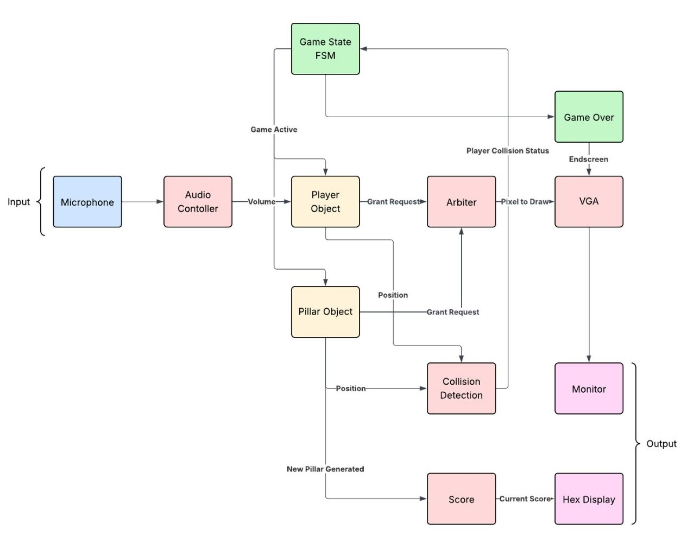

Oct. 2025 – Dec. 2025
A hardware-based side-scrolling game implemented in Verilog on the Terasic DE1-SoC (Cyclone V) platform, using real-time audio processing for character control and VGA output for display. Traditional button inputs are replaced with voice-amplitude control: the player "jumps" by making noise into a microphone, which is processed through the FPGA's onboard audio codec.
volume.v) : interfaces with the Wolfson WM8731 codec via I2C to capture
16-bit audio samples, and calculates signal magnitude to trigger the jump logic.vga_demo.v) : a finite state machine that manages bus access between the
player, pillars, and background reset modules to prevent screen tearing.player.v) : implements gravity and velocity-based movement.collision.v) : purely combinational logic that monitors coordinate
overlaps to trigger a game-over state.The game uses a finite state machine to handle the drawing of objects. To keep performance smooth, the background is only redrawn on a reset or collision, while moving objects (the bird and pillars) use an erase-and-redraw cycle within the VGA arbiter.
The score is tracked using a binary-to-BCD converter and displayed in real time on the HEX0-HEX5 seven-segment displays.